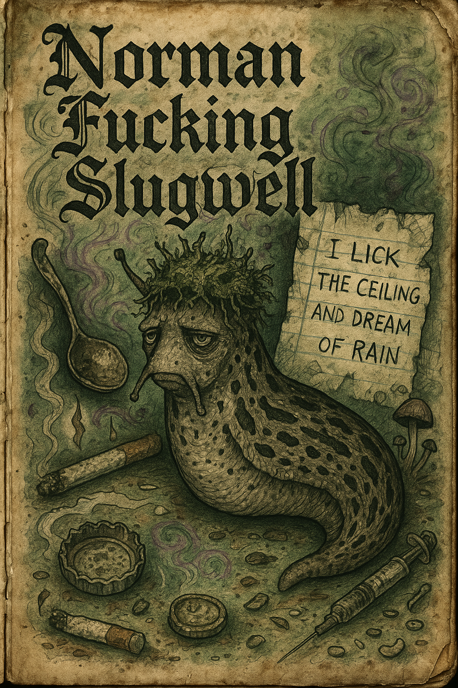

Sanctum of Astra
Home
Zines
Field Archive
Research
Plant Index
Perfume House
Rituals
Zines
Small books of memory, rot, and imagination.

Volume I — I Lick the Ceiling and Dream of Rain
Volume II — I Found God Beneath the Moss